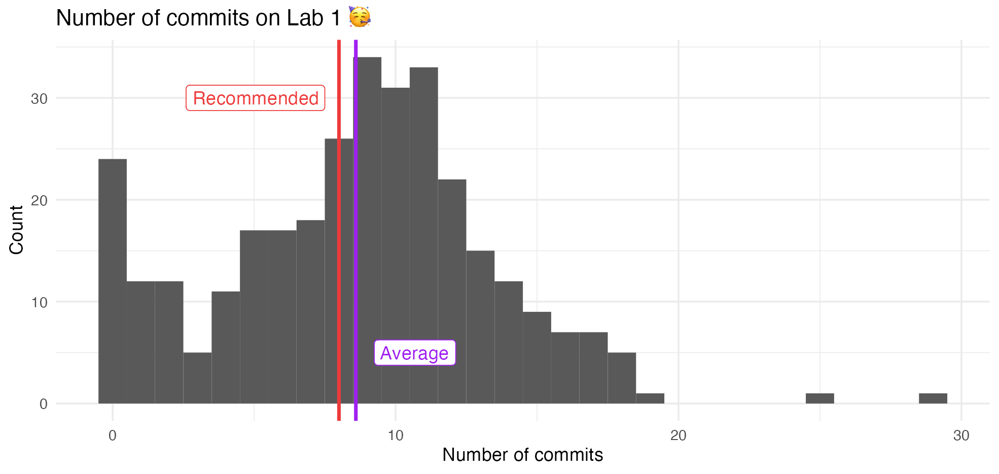

Grammar of data wrangling
Lecture 5
Duke University
STA 199 - Spring 2024
2024-01-30
Warm up
While you wait for class to begin…
Go to your
aerepo, click Pull to get today’s application exercise to get ready for later.Questions from the prepare materials?
Asking good questions
- Post content questions on Ed Discussion
- If you have a coding question always provide the code, and if relevant, the error
- If this feels impossible, don’t fret it, it’s ok to ask questions without the code. It’s just more efficient with it!
- Title your thread in a way that can help others (e.g., “Q7” vs. “error with
mutate()function in Lab 1 - Q7”) - Check for previous questions
Coding style + workflow
Avoid long lines of code.
- We should be able to see all of your code in the PDF document you submit.
Label code chunks.
- Do not put spaces in the code-chunk
labels.
- Do not put spaces in the code-chunk
Render, commit, and push regularly.
- Think about it like clicking to save regularly as you type a report.
Lab 1
Data frames and tibbles
NYC Flights
To demonstrate data wrangling we will use
flights, a tibble in the nycflights13 R package.The data set includes characteristics of all flights departing from New York City (JFK, LGA, EWR) in 2013.
flights – dimensions
- Number of rows:
flights – first look
Rows: 336,776
Columns: 19
$ year <int> 2013, 2013, 2013, 2013, 2013, 2013, 2013, 2013, 2013, 2013, 2013,…
$ month <int> 1, 1, 1, 1, 1, 1, 1, 1, 1, 1, 1, 1, 1, 1, 1, 1, 1, 1, 1, 1, 1, 1,…
$ day <int> 1, 1, 1, 1, 1, 1, 1, 1, 1, 1, 1, 1, 1, 1, 1, 1, 1, 1, 1, 1, 1, 1,…
$ dep_time <int> 517, 533, 542, 544, 554, 554, 555, 557, 557, 558, 558, 558, 558, …
$ sched_dep_time <int> 515, 529, 540, 545, 600, 558, 600, 600, 600, 600, 600, 600, 600, …
$ dep_delay <dbl> 2, 4, 2, -1, -6, -4, -5, -3, -3, -2, -2, -2, -2, -2, -1, 0, -1, 0…
$ arr_time <int> 830, 850, 923, 1004, 812, 740, 913, 709, 838, 753, 849, 853, 924,…
$ sched_arr_time <int> 819, 830, 850, 1022, 837, 728, 854, 723, 846, 745, 851, 856, 917,…
$ arr_delay <dbl> 11, 20, 33, -18, -25, 12, 19, -14, -8, 8, -2, -3, 7, -14, 31, -4,…
$ carrier <chr> "UA", "UA", "AA", "B6", "DL", "UA", "B6", "EV", "B6", "AA", "B6",…
$ flight <int> 1545, 1714, 1141, 725, 461, 1696, 507, 5708, 79, 301, 49, 71, 194…
$ tailnum <chr> "N14228", "N24211", "N619AA", "N804JB", "N668DN", "N39463", "N516…
$ origin <chr> "EWR", "LGA", "JFK", "JFK", "LGA", "EWR", "EWR", "LGA", "JFK", "L…
$ dest <chr> "IAH", "IAH", "MIA", "BQN", "ATL", "ORD", "FLL", "IAD", "MCO", "O…
$ air_time <dbl> 227, 227, 160, 183, 116, 150, 158, 53, 140, 138, 149, 158, 345, 3…
$ distance <dbl> 1400, 1416, 1089, 1576, 762, 719, 1065, 229, 944, 733, 1028, 1005…
$ hour <dbl> 5, 5, 5, 5, 6, 5, 6, 6, 6, 6, 6, 6, 6, 6, 6, 5, 6, 6, 6, 6, 6, 6,…
$ minute <dbl> 15, 29, 40, 45, 0, 58, 0, 0, 0, 0, 0, 0, 0, 0, 0, 59, 0, 0, 0, 0,…
$ time_hour <dttm> 2013-01-01 05:00:00, 2013-01-01 05:00:00, 2013-01-01 05:00:00, 2…# A tibble: 6 × 19
year month day dep_time sched_dep_time dep_delay arr_time sched_arr_time arr_delay
<int> <int> <int> <int> <int> <dbl> <int> <int> <dbl>
1 2013 1 1 517 515 2 830 819 11
2 2013 1 1 533 529 4 850 830 20
3 2013 1 1 542 540 2 923 850 33
4 2013 1 1 544 545 -1 1004 1022 -18
5 2013 1 1 554 600 -6 812 837 -25
6 2013 1 1 554 558 -4 740 728 12
# ℹ 10 more variables: carrier <chr>, flight <int>, tailnum <chr>, origin <chr>,
# dest <chr>, air_time <dbl>, distance <dbl>, hour <dbl>, minute <dbl>,
# time_hour <dttm>tibble vs. data frame
- tibble: an opinionated version of the
Rdata frame - All tibbles are data frames, but not all data frames are tibbles!
- Two main differences between a tibble and a data frame:
- Printing
- Stricter subsetting
Printing
Display first 10 rows and all of the columns that fit on the screen will display, along with the type of each column.
# A tibble: 336,776 × 19
year month day dep_time sched_dep_time dep_delay arr_time sched_arr_time arr_delay
<int> <int> <int> <int> <int> <dbl> <int> <int> <dbl>
1 2013 1 1 517 515 2 830 819 11
2 2013 1 1 533 529 4 850 830 20
3 2013 1 1 542 540 2 923 850 33
4 2013 1 1 544 545 -1 1004 1022 -18
5 2013 1 1 554 600 -6 812 837 -25
6 2013 1 1 554 558 -4 740 728 12
7 2013 1 1 555 600 -5 913 854 19
8 2013 1 1 557 600 -3 709 723 -14
9 2013 1 1 557 600 -3 838 846 -8
10 2013 1 1 558 600 -2 753 745 8
# ℹ 336,766 more rows
# ℹ 10 more variables: carrier <chr>, flight <int>, tailnum <chr>, origin <chr>,
# dest <chr>, air_time <dbl>, distance <dbl>, hour <dbl>, minute <dbl>,
# time_hour <dttm>(Attempt to) display all of the data, or die (crash) tryin (if the dataset is too large)!
speed dist
1 4 2
2 4 10
3 7 4
4 7 22
5 8 16
6 9 10
7 10 18
8 10 26
9 10 34
10 11 17
11 11 28
12 12 14
13 12 20
14 12 24
15 12 28
16 13 26
17 13 34
18 13 34
19 13 46
20 14 26
21 14 36
22 14 60
23 14 80
24 15 20
25 15 26
26 15 54
27 16 32
28 16 40
29 17 32
30 17 40
31 17 50
32 18 42
33 18 56
34 18 76
35 18 84
36 19 36
37 19 46
38 19 68
39 20 32
40 20 48
41 20 52
42 20 56
43 20 64
44 22 66
45 23 54
46 24 70
47 24 92
48 24 93
49 24 120
50 25 85Stricter subsetting
Data wrangling with dplyr
dplyr
Primary package in the tidyverse for data wrangling

Row operations
slice(): chooses rows based on locationfilter():chooses rows based on column valuesarrange(): changes the order of the rowssample_n(): take a random subset of the rows
slice()
Display the first five rows of flights:
- 1
-
Take the
flightsdata frame, and then, - 2
- Slice its first five rows
# A tibble: 5 × 19
year month day dep_time sched_dep_time dep_delay arr_time sched_arr_time arr_delay
<int> <int> <int> <int> <int> <dbl> <int> <int> <dbl>
1 2013 1 1 517 515 2 830 819 11
2 2013 1 1 533 529 4 850 830 20
3 2013 1 1 542 540 2 923 850 33
4 2013 1 1 544 545 -1 1004 1022 -18
5 2013 1 1 554 600 -6 812 837 -25
# ℹ 10 more variables: carrier <chr>, flight <int>, tailnum <chr>, origin <chr>,
# dest <chr>, air_time <dbl>, distance <dbl>, hour <dbl>, minute <dbl>,
# time_hour <dttm>filter()
Filter for flights to RDU in flights:
- 1
-
Take the
flightsdata frame, and then, - 2
-
Filter for rows where
destis equal toRDU
# A tibble: 8,163 × 19
year month day dep_time sched_dep_time dep_delay arr_time sched_arr_time arr_delay
<int> <int> <int> <int> <int> <dbl> <int> <int> <dbl>
1 2013 1 1 800 810 -10 949 955 -6
2 2013 1 1 832 840 -8 1006 1030 -24
3 2013 1 1 851 851 0 1032 1036 -4
4 2013 1 1 917 920 -3 1052 1108 -16
5 2013 1 1 1024 1030 -6 1204 1215 -11
6 2013 1 1 1127 1129 -2 1303 1309 -6
7 2013 1 1 1157 1205 -8 1342 1345 -3
8 2013 1 1 1240 1235 5 1415 1415 0
9 2013 1 1 1317 1325 -8 1454 1505 -11
10 2013 1 1 1449 1450 -1 1651 1640 11
# ℹ 8,153 more rows
# ℹ 10 more variables: carrier <chr>, flight <int>, tailnum <chr>, origin <chr>,
# dest <chr>, air_time <dbl>, distance <dbl>, hour <dbl>, minute <dbl>,
# time_hour <dttm>The pipe
The pipe,
|>, is an operator (a tool) for passing information from one process to another.Use
|>mainly in data pipelines to pass the output of the previous line of code as the first input of the next line of code.When reading code “in English”, say “and then” whenever you see a pipe.
Delayed flights to RDU
Which airline is the most delayed, on average, arriving in RDU from a New York City airport?
Goal:
# A tibble: 5 × 2
carrier mean_arr_delay
<chr> <dbl>
1 UA 56
2 B6 13.3
3 EV 12.2
4 9E 9.67
5 MQ 8.82The pipe, in action
1flights- 1
- Take the flights data frame
# A tibble: 336,776 × 19
year month day dep_time sched_dep_time dep_delay arr_time sched_arr_time arr_delay
<int> <int> <int> <int> <int> <dbl> <int> <int> <dbl>
1 2013 1 1 517 515 2 830 819 11
2 2013 1 1 533 529 4 850 830 20
3 2013 1 1 542 540 2 923 850 33
4 2013 1 1 544 545 -1 1004 1022 -18
5 2013 1 1 554 600 -6 812 837 -25
6 2013 1 1 554 558 -4 740 728 12
7 2013 1 1 555 600 -5 913 854 19
8 2013 1 1 557 600 -3 709 723 -14
9 2013 1 1 557 600 -3 838 846 -8
10 2013 1 1 558 600 -2 753 745 8
# ℹ 336,766 more rows
# ℹ 10 more variables: carrier <chr>, flight <int>, tailnum <chr>, origin <chr>,
# dest <chr>, air_time <dbl>, distance <dbl>, hour <dbl>, minute <dbl>,
# time_hour <dttm>The pipe, in action
- 1
- Take the flights data frame,
- 2
- and then filter for flights going to RDU
# A tibble: 8,163 × 19
year month day dep_time sched_dep_time dep_delay arr_time sched_arr_time arr_delay
<int> <int> <int> <int> <int> <dbl> <int> <int> <dbl>
1 2013 1 1 800 810 -10 949 955 -6
2 2013 1 1 832 840 -8 1006 1030 -24
3 2013 1 1 851 851 0 1032 1036 -4
4 2013 1 1 917 920 -3 1052 1108 -16
5 2013 1 1 1024 1030 -6 1204 1215 -11
6 2013 1 1 1127 1129 -2 1303 1309 -6
7 2013 1 1 1157 1205 -8 1342 1345 -3
8 2013 1 1 1240 1235 5 1415 1415 0
9 2013 1 1 1317 1325 -8 1454 1505 -11
10 2013 1 1 1449 1450 -1 1651 1640 11
# ℹ 8,153 more rows
# ℹ 10 more variables: carrier <chr>, flight <int>, tailnum <chr>, origin <chr>,
# dest <chr>, air_time <dbl>, distance <dbl>, hour <dbl>, minute <dbl>,
# time_hour <dttm>The pipe, in action
- 1
- Take the flights data frame,
- 2
- and then filter for flights going to RDU,
- 3
- and then group by carrier
# A tibble: 8,163 × 19
# Groups: carrier [5]
year month day dep_time sched_dep_time dep_delay arr_time sched_arr_time arr_delay
<int> <int> <int> <int> <int> <dbl> <int> <int> <dbl>
1 2013 1 1 800 810 -10 949 955 -6
2 2013 1 1 832 840 -8 1006 1030 -24
3 2013 1 1 851 851 0 1032 1036 -4
4 2013 1 1 917 920 -3 1052 1108 -16
5 2013 1 1 1024 1030 -6 1204 1215 -11
6 2013 1 1 1127 1129 -2 1303 1309 -6
7 2013 1 1 1157 1205 -8 1342 1345 -3
8 2013 1 1 1240 1235 5 1415 1415 0
9 2013 1 1 1317 1325 -8 1454 1505 -11
10 2013 1 1 1449 1450 -1 1651 1640 11
# ℹ 8,153 more rows
# ℹ 10 more variables: carrier <chr>, flight <int>, tailnum <chr>, origin <chr>,
# dest <chr>, air_time <dbl>, distance <dbl>, hour <dbl>, minute <dbl>,
# time_hour <dttm>The pipe, in action
1flights |>
2 filter(dest == "RDU") |>
3 group_by(carrier) |>
4 summarize(mean_arr_delay = mean(arr_delay, na.rm = TRUE))- 1
- Take the flights data frame,
- 2
- and then filter for flights going to RDU,
- 3
- and then group by carrier,
- 4
- and then calculate the mean arrival delay for each carrier
# A tibble: 5 × 2
carrier mean_arr_delay
<chr> <dbl>
1 9E 9.67
2 B6 13.3
3 EV 12.2
4 MQ 8.82
5 UA 56 The pipe, in action
1flights |>
2 filter(dest == "RDU") |>
3 group_by(carrier) |>
4 summarize(mean_arr_delay = mean(arr_delay, na.rm = TRUE)) |>
5 arrange(desc(mean_arr_delay))- 1
- Take the flights data frame,
- 2
- and then filter for flights going to RDU,
- 3
- and then group by carrier,
- 4
- and then calculate the mean arrival delay for each carrier,
- 5
- and then arrange in descending order of mean arrival delay.
# A tibble: 5 × 2
carrier mean_arr_delay
<chr> <dbl>
1 UA 56
2 B6 13.3
3 EV 12.2
4 9E 9.67
5 MQ 8.82Column operations
select(): changes whether or not a column is included.rename(): changes the name of columns.mutate(): changes the values of columns and creates new columns.
Groups of rows
summarize(): collapses a group into a single row.count(): count unique values of one or more variables.group_by(): perform calculations separately for each value of a variable
Application exercise
ae-04-flights-wrangling
Go to the project navigator in RStudio (top right corner of your RStudio window) and open the project called
ae.If there are any uncommitted files, commit them, and then click Pull.
Open the file called
ae-04-flights-wrangling.qmdand render it.
Recap: pipe
- The pipe operator passes what comes before it into the function that comes after it as the first argument in that function.
- Always use a line break after the pipe, and indent the next line of code.
- Just like always use a line break between layers of ggplots, after
+, and indent the next line.
- Just like always use a line break between layers of ggplots, after
Recap: logical operators
| operator | definition |
|---|---|
< |
is less than? |
<= |
is less than or equal to? |
> |
is greater than? |
>= |
is greater than or equal to? |
== |
is exactly equal to? |
!= |
is not equal to? |
Recap: logical operators
| operator | definition |
|---|---|
x & y |
is x AND y? |
x \| y |
is x OR y? |
is.na(x) |
is x NA? |
!is.na(x) |
is x not NA? |
x %in% y |
is x in y? |
!(x %in% y) |
is x not in y? |
!x |
is not x? (only makes sense if x is TRUE or FALSE) |